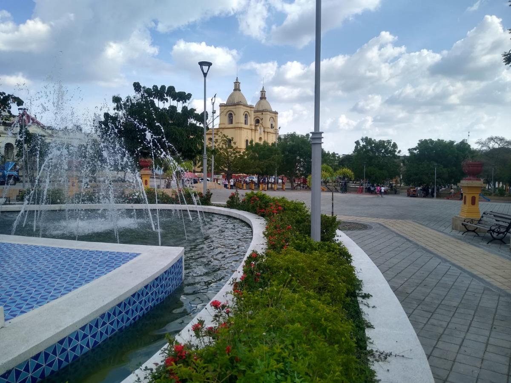

Municipio de Sucre, Colombia
La Perla
de la Sabana
Fácil de visitar, difícil de olvidar. Corozal te recibe con historia viva, gastronomía caribe y festividades que llenan de color cada rincón.
Guía digital para viajeros, estudiantes e investigadores que quieren conocer la historia, cultura, gastronomía y puntos de interés de Corozal, Sucre.
¿Primera vez en Corozal? Empieza por Cultura o explora el Mapa para orientarte.
Comenzar →Descubre Corozal
¿Qué quieres explorar?
Corozal es mucho más que un municipio. Es una experiencia cultural, histórica y gastronómica única en la sabana sucreña.

01
Cultura y Tradiciones
Folclor sabanero, cumbia, artesanías zenúes y leyendas que viven en la memoria del pueblo.
Ver sección →
02
Eventos y Fiestas
Carnavales, festivales del corozo, fiestas patronales y ferias que llenan de color el calendario.
Ver sección →
03
Historia e Identidad
Raíces zenúes, herencia colonial española y arquitectura que narra cinco siglos de historia.
Ver sección →
04
Gastronomía Local
Chicha de corozo, mote de guandú, patacón con queso y los sabores únicos de la sabana.
Ver sección →Corozal no se visita, se vive. Sus calles, su música y su gastronomía quedan grabados en la memoria de quien las conoce.
Perla de la Sabana · Sucre, Colombia
Explora más
¿Listo para descubrir Corozal?
Explora su folclor, su historia, su gastronomía y sus festividades.